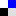

|
download build info technical details license |
|
|
DieHard helps buggy programs run correctly digg this | add to your del.icio.us account NEW! DieHard protection for Mozilla Firefox on Windows (10/17/2006) Out-of-the-box, Mozilla (versions 1.0.2 and 1.7.3) both crash when loading this page (see the picture above). With DieHard, they load and display correctly. Download DieHardDownload and install this to protect Mozilla / Firefox on Windows. If you are a programmer, or want to use DieHard for another system, sign up for the DieHard mailing list for new releases, then download DieHard. (NOTE: this version will be updated soon to include the above Windows install.)More InformationDieHard eliminates — or greatly reduces the likelihood of — a class of bugs and security vulnerabilities called memory errors. DieHard prevents certain kinds of errors from happening at all. It also reduces the probability that a bug will have any effect at all. DieHard works by randomly locating program objects far apart from each other in memory. This scattering of memory objects all over memory not only makes some errors unlikely to happen, it also makes it virtually impossible for a hacker to know where vulnerable parts of the program's data are. This thwarts a wide class of exploits.Technical DetailsDieHard prevents invalid and multiple frees and heap corruption, and probabilistically avoids buffer overflows, dangling pointer errors, and uninitialized reads. This sample program illustrates a wide range of errors that DieHard prevents. For more details, see the following (technical) paper:
Terms of useDieHard is Copyright (C) 2005-6 Emery Berger, University of Massachusetts Amherst, and is free for noncommercial use. |
|